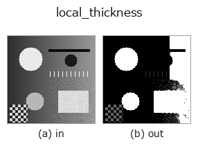

morphology op• 数据种类:image → image
• 调用:fullseye.apply(img, "local_thickness", a=0.5, b=0.5)(2-D 的模型是一张图 + 两个标量旋钮 a,b∈[0,1])

*图为在 128×128 合成输入上实际运行的输出。左为输入，右为输出。点云以俯视散点显示(亮度 = z)，一维序列为折线，体数据为沿 z 的最大值投影，视频为中间帧，复数图像为幅值；无法成像的返回值直接显示数值。*
扫描旋钮 a(0.1 / 0.5 / 0.9，另一旋钮取默认):
▸ local_thickness: knob a sweep (docs site)
扫描旋钮 b(0.1 / 0.5 / 0.9，另一旋钮取默认):
▸ local_thickness: knob b sweep (docs site)
换别的图像(合成场景 / 照片 / 硬币。上排为输入，下排为对应输出。旋钮取默认):
▸ local_thickness: other inputs (docs site)
*第 4 列是彩色 (H,W,3) 输入。此算子能正确处理颜色而不跨通道(不把颜色通道当作第三个空间轴卷积)。*
> 该算子的说明尚无译文,以下照原文给出。
各前景画素に「そこを覆える最大の円の直径」を入れて返す(局所肉厚)。
明るい側を前景とみなす閾値が `b(0.1〜0.9)。a` が測る上限の半径(1〜12 画素)で、
出力はその上限で割って `[0,1] に収めてある —— **絶対値が要るときは a` から
上限を逆算して掛け戻すこと**。
粒径・気孔径・肉厚を「1 枚の地図」として出す古典的な量で、モルフォロジーの
粒度測定(granulometry)と同じもの: ある画素の値が `r なら、その画素は半径 r` の
円による開処理を生き残る。距離変換で内接円の半径を求め、半径の大きい順にその円が
覆う範囲へ書き込む、という素直な実装。
適用条件: (1) 前景を 1 つの閾値で決めるので、照明むらがあると太さが場所によって
偏る —— 先に `local_threshold などで平坦化すること。(2) 上限 a` より太い構造は
上限で頭打ちになる(飽和しているかは出力の最大値が 1.0 に貼りついているかで分かる)。
(3) 画素単位の量なので、直径が 3 画素を切ると量子化の刻みが 30% を超える。
用途: 鋳巣・発泡体の気孔径分布、粉体の粒径、薄肉部の検出、繊維の太さ。
3-D 版は `ops3d の vol_wall_thickness`。HALCON に対応する単体 op は無い。
• 示例数据目录(下载 URL / 许可证) —— 2-D 用 skimage.data(BSD/公有领域)加合成图,3-D 给出真实数据源(Stanford/PDS 等)的下载 URL。
• 算子来历与参考文献 —— 该算子族所依据的研究/方法出处。
• 算法的正典(作者・年份)与用途见上面的族使用指南。
下面的程序已确认可以运行(与图相同的输入)。在 Studio 帮助中，此块会变成按钮，可当场加载并运行。
local_thickness 0.35 0.50
▸ Load this pipeline · Load & run
• gallery2d_morphology — py -3.11 examples/gallery2d_morphology.py
• poc_bone_trabecular_thickness — py -3.11 examples/poc_bone_trabecular_thickness.py
image 作为输入)identity · gaussian · mean_box · bilateral · unsharp · median · min_filter · max_filter
morphology)gerode · gdilate · gopen · gclose · runlength_smear · tophat · bothat · morph_grad
*Provenance: ops.py — 2D 算子登记表。本条目由 tools/opdocs.py md 自动生成(请勿手工编辑)。*
© 2026 Kazufumi Furuse — Fullseye operator documentation. Licensed under Apache-2.0.
{kind=link}
{kind=link}
{kind=link}